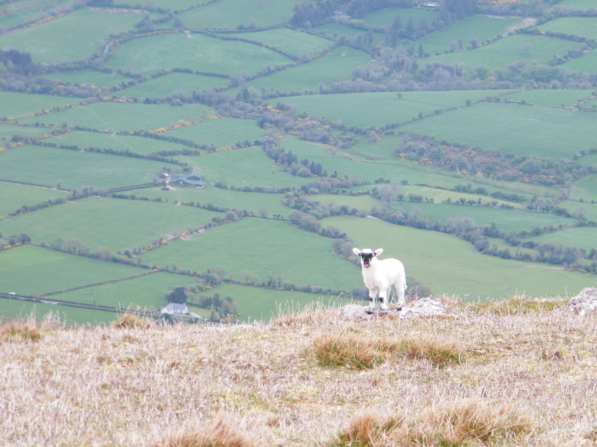
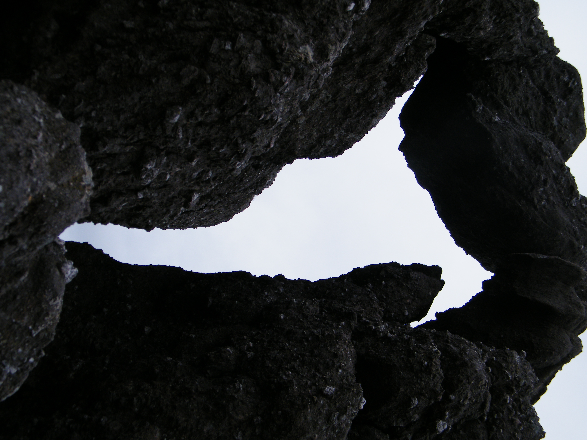

This mountain is on The Gribbon List, it will be part of the total metres for my Ten Thousand Metre Challenge, a fundraiser for Mountain Rescue Ireland, you can support by donating at High Point Ireland 10,000m Challenge 2017 fundraiser page.

Centra 21 Day Challenge full Plan Here
Map
Ready for off, joined by my Aunt Josephine and my Uncle Johnny today.
The mast disguised as a tree.

On a high.
Rocks Everywhere.
First view of Coumshingaun.
High above the lake
Coumshingaun
I am KING
Coumshingaun
Hi it's me!
More Rocks
View behind us
These rocks have held for thousands of years, hopefully they wont fall now!
Relaxing
Helvick Head
Coumshingaun
Every step is a different view
And more rocks

and more
Great Views
Dillon waiting for the Ould ones
Rear wall of Coumshingaun
Coumshingaun from the rear
Spot the sheep
Fauscoum792m 014 on the Gribbon List
Plenty more like this in The Gribbons
We all made it, Dad's behind the camera
Fauscoum N. Top 767m
Coum Iarthar Loughs
Steep cliffs above Coum Iarthar Loughs

A cairn on route to Crotty's Rock
Crotty's Lough or Lough Coumgaurha
Where's Mammy
Crotty's Rock
A sheer drop below Crotty's Rock
Crotty's Hideout
Unusual how the rocks lay
Dillon in the hideout
More unusual rock formations
Cool Window

On a high again
The hideout looks normal from here
Coumshingaun from the other side as we return
Dillon making his way down
And more of the rocks
King again
Can you spot me
At Coumshingaun water level at last
Nice Seat
Trees are rare here
Can you see me waiting for the ould ones again